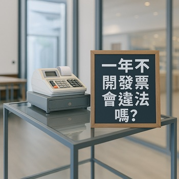

一年不開發票會違法嗎？
談營業稅免用統一發票制度的實務解析
撰文： 彭裕峰 會計師
一、為什麼這個議題重要？
許多創業者、小商家對「要不要開發票」感到困惑，甚至誤以為只要營業規模小就能免責。
然而實務上，「免用統一發票」制度適用條件明確、查核頻繁，現行創業者要符合資格適用該條件有一定困難。
二、什麼情況可以免開發票？
依規定，若營業人月銷售額未達 20 萬元，且未被國稅局認定具備使用統一發票能力，可申請免用統一發票。
但「免開發票 ≠ 不用繳稅」，仍需按規定申報營業稅。
三、起徵點怎麼算？
依114年1月1日新制，起徵標準如下：
| 每月銷售額 | 課稅方式 |
|---|---|
| 小於 10 萬（貨物）或 小於 5 萬（勞務） | 完全免稅，無須課徵營業稅 |
| 大於前一級距但僅小於 20 萬 | 由國稅局查定課徵 1% 營業稅，每季開單一次 |
| 大於 20 萬或被認定具發票開立能力 | 須開立統一發票，採 5% 稅率，可扣抵進項，並每兩月自行申報 |
四、常見誤解與實務風險
不少微型商家認為「沒開發票就沒稅」，或「只在網路上賣東西沒人會查」，但隨著電商平台資料透明、金流帳戶可串接查核，政府透過大數據早已能掌握實際銷售金額。
網拍、選物店、公仔買賣等，月收幾十萬並不罕見，若未辦理營業登記或逾額仍免開發票，可能面臨補稅與裁罰。
五、什麼情況容易被補稅與開罰？
- 銷售額已超過起徵點卻未開發票
- 實際營業性質變更，未同步調整稅籍
- 明知應開發票卻蓄意規避
這些情況都可能被國稅局查核並追稅、開罰。
六、給創業者的提醒
即使一開始規模不大，也建議及早辦理營業登記。
未來若營收成長或轉型品牌經營，稅籍與帳務要能及時銜接，避免落入灰色地帶。
找一位值得信賴的會計師合作，是長遠穩健經營的開始。
七、結語：誠信經營，安心報稅
「免用發票制度」原為照顧微型業者所設，但若誤用或濫用，反而可能帶來風險。
合法申報、妥善規劃，才能放心拚事業、不必為稅務擔心。
如您不確定是否適用，歡迎聯繫誠峰，我們將協助您釐清稅務身份、建立合規制度，走得安心，也走得更遠。